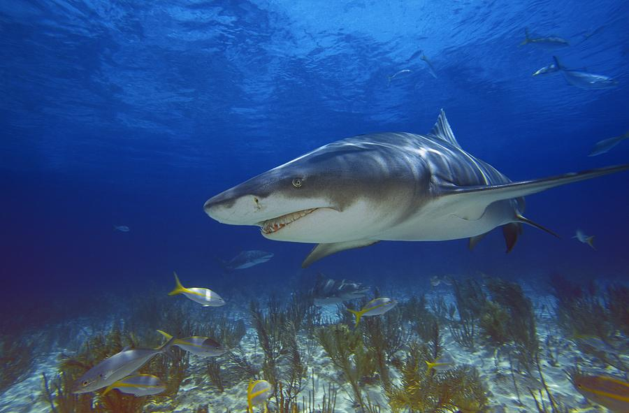
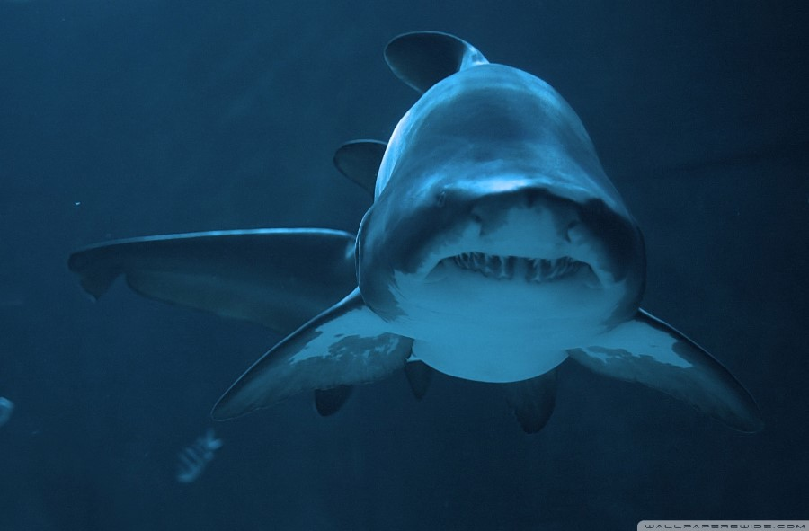
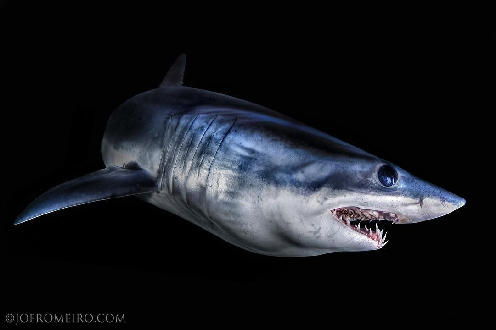
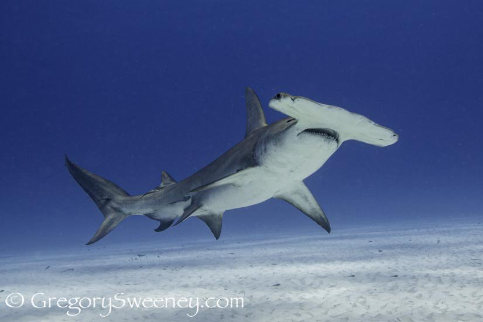

サメの世界に引き込まれて数十年
知れば知るほど引き込まれるサメの魅力
まずはご相談
好きなサメ暫定ベスト5（簡易版）
01 ニシレモンザメ
メジロザメ目のレモン色をした中型のサメ。こいつがめちゃくちゃかわいいんだわ。もうね、スマートのようでずんぐりむっくりのようで、その絶妙なシルエットがもうフェチ的にすこ。
02 シロワニ
ネズミザメ目の中でも特におとなしめのサメ。最も水族館とかで見られるあいつ。こいつも、レモンザメと同じくシルエットがかわいいけど、顔が超悪人顔でしかも性格はおとなしいというこのギャップがたまらん。
03 アオザメ
ネズミザメ目に属する泳ぐスピードナンバー1のスマートなサメ。とにかく顔がいい。かっこいい。しかもミサイルのように抵抗を流すシュッとしたフォルムでイケイケ感マシマシ。
04 ホホジロザメ
.jpg)
ネズミザメ目に属する、ザ・サメ。サメと言えばこいつ。こいつと言えばサメ。怖くてかっこよくてかわいくて美しい。そりゃみんな好きになる。
05 ヒラシュモクザメ
メジロザメ目シュモクザメ科の中でも最も大きい種。目が離れててヘンテコな感じするけど、普通にかっこいい顔。用途はレーダー拡張とか舵取りのためとか諸説あるけど、未だ正確なことはわかってないらしい。
好きなサメ映画
ジョーズ
サメ映画の爆心地
登場するサメ：ホホジロザメ/イタチザメ
ディープ・ブルー
サメ映画界のカリスマ
登場するサメ：アオザメ3匹/イタチザメ
シャークナイト
サメの種類数ナンバー1
登場するサメ：ホホジロザメ/アオザメ/オオメジロザメ/ダルマザメ/ヒラシュモクザメ/オオワニザメ
レッド・ウォーター サメ地獄
まさかの川が舞台
登場するサメ：オオメジロザメ
種のカテゴリー
ホホジロザメ/アオザメ/ネズミザメ/ウバザメ/シロワニ/
ミツクリザメ/メガマウス/オナガザメ
ヤジブカ/オオメジロザメ/ヨシキリザメ/ネムリブカ/シュモクザメ/
ドチザメ/トラザメ/ナヌカザメ
ジンベエザメ/コモリザメ/イヌザメ/オオテンジクザメ/
マモンツキテンジクザメ/トラフザメ/オオセ
ネコザメ/ポートジャクソンネコザメ/
オデコネコザメ
カグラザメ/ラブカ/
エビスザメ/エドアブラザメ
アブラツノザメ/ダルマザメ/ヨロイザメ/オンデンザメ
オロシザメ/ワニグチツノザメ
キクザメ/
コギクザメ
カスザメ/ホンカスザメ/
コロザメ
ノコギリザメ/
ムツエラノコギリザメ
よくあるご質問
Q. サメって人を食べるの？
A. よく考えてみてください。何年も海で生きてきたサメからして、生まれて初めて人間と遭遇して「おいしそう！食べる！」と思うと思いますか。私たち人間に例えると、宇宙人と遭遇して即舐めまわすようなもの。中にはそんな人もいないとは言い切れないけど、そこはサメも同じで種類によって性格がまるで違うし、同じ種でも個体によって違う。獰猛で海生哺乳類を餌にしている大型のサメなんかは、アシカやカメと間違えて人に噛みつくこともあるけど、そんなサメにとって人間はアシカと比べて脂肪がかなり少ないため食料とみなさず、噛みついて餌じゃないと判断すれば離れてしまう。けれど、大型のサメに一度噛まれれば出血多量で死んでしまうことも少なくない。そういうのを取り上げて、人がサメに食われたと大々的に取り上げる。食ってないっつの。何が言いたいかというと、500種類以上いるサメの中で、人に危害を加える可能性がある種はごくごく少ないかつ、そんな少ない中でも、基本は警戒して極限に空腹状態でもない限り襲わない。そんな事情があるにもかかわらず、映画で人を襲ってた、ニュースで人が襲われてた、とかのほんの一部の認識だけで「サメ＝人食い」というイメージが払拭できないレベルで全人類に染み込んでしまっているのが嘆かわしい。クマとかライオンとかどんな野生動物だって気をつけないと襲われる可能性があるのは同じことなのに、人食いクマとか人食いライオンというイメージはそこまで定着してなく、クマに関してはかわいい動物として扱われることも多い。サメもかわいいっつの。一つの意見なので完全には信用しないでください。